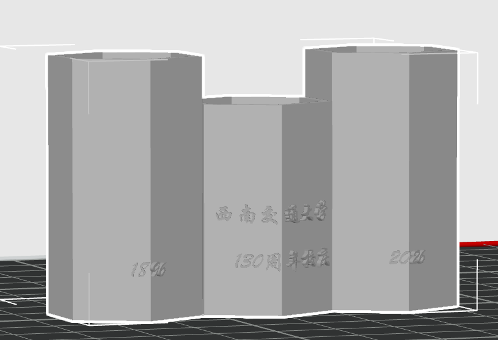
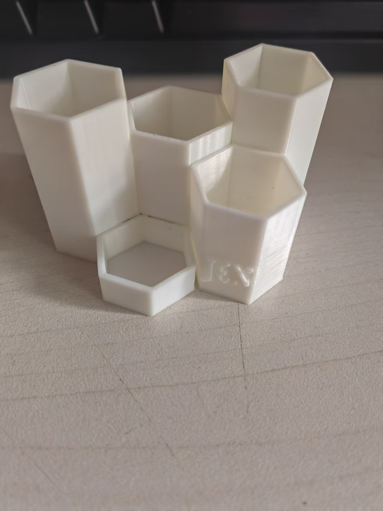

项目背景
根据“百卅交大·印刻初心”主题要求，本次作品需要兼顾交大特色、纪念意义与3D打印可实现性。 我选择将校庆文字与桌面收纳功能结合，做成一个适合日常使用的文创笔筒。
HTML日志 / 3D设计与3D打印
以西南交通大学130周年校庆为主题，将“1896 - 2026”“西南交通大学”“130周年校庆”等文字元素融入 六边形组合笔筒，完成从建模、导出、切片到实物打印的完整文创作品开发记录。
根据“百卅交大·印刻初心”主题要求，本次作品需要兼顾交大特色、纪念意义与3D打印可实现性。 我选择将校庆文字与桌面收纳功能结合，做成一个适合日常使用的文创笔筒。
整体采用多单元六边形拼接结构，造型稳定，视觉上有蜂巢式聚合感；前侧加入校庆相关浮雕文字， 兼顾纪念属性与识别度。
根据现有 STL 模型测得整体包络尺寸约为 66.56 mm × 45.00 mm × 41.93 mm， 明显满足单件不超过 200 mm × 200 mm × 200 mm 的尺寸限制。
作品文字中融入“西南交通大学”“1896”“2026”“130周年校庆”等校庆元素，主题明确。
已包含 SolidWorks 源文件 笔筒.SLDPRT 和打印模型文件 笔筒.STL。
已整理建模视图、切片视图与结构截图，用于展示建模结构与打印准备过程。
已保留多张实物照片，可清楚展示整体造型、内部空间、表面质量与文字效果。
结构为一体成型小尺寸件，满足桌面级 3D 打印需求，打印流程清晰，后续仍有细节优化空间。
本页面位于 /html/index.html，符合截图中的入口要求。
在创意阶段，我希望作品不要只是单纯摆件，而是要兼顾“纪念性”和“功能性”。因此最终决定做一个 多仓位笔筒：高仓可放笔、马克笔或剪刀，低仓可以放回形针、U盘、橡皮或便签夹。这样既契合文创作品 的展示属性，也能真正用于日常桌面整理。
造型上选择六边形单元，是因为它既有建筑几何感，也便于通过不同高度组合出层次变化。前侧加入浮雕文字后， 整件作品既保留了简洁现代的几何外观，又体现出校庆纪念的主题属性。
先确定作品不是纯摆件，而是带有使用场景的文创笔筒，明确“多仓位 + 校庆文字”的总体方向。
以六边形为基础轮廓，建立不同高度的中空容器单元，再进行组合拼接。
通过高低错落的仓体安排，实现“长笔收纳区 + 小物件收纳区”的复合桌面使用方式。
在正面和侧面加入“1896”“西南交通大学”“130周年校庆”“2026”等文字，提高纪念辨识度。
导出 STL 后进行切片预览，检查壁厚、悬空面、文字区域和整体可打印性，确认模型适合直接打印。

.png)
.png)
.png)

.jpg)
.jpg)
| 作品名称 | 百卅交大组合式文创笔筒 |
|---|---|
| 作品类别 | 功能性文创 / 3D打印桌面收纳 |
| 建模文件 | SLDPRT、STL |
| 尺寸限制符合情况 | 满足 200 mm × 200 mm × 200 mm 以内要求 |
| 本次实测包络尺寸 | 66.56 mm × 45.00 mm × 41.93 mm |
| 主题元素 | 西南交通大学、1896、2026、130周年校庆 |
目前浮雕文字在实物中出现毛边，后续可以通过增大笔画宽度、减少过小细节、适当调整文字凸起高度来提升可读性。
对斜面和转角过渡处可以继续优化面数与外轮廓处理方式，减少局部细小打印痕迹，让成品更精致。
如果继续迭代，可考虑加入校徽轮廓、校门线稿或建筑剪影，让作品与校园文化的联系更直观、更有辨识度。
本项目当前已整理的可提交材料如下：
说明：本页面参考了项目记录型网页的组织方式，重点突出“设计目标、建模过程、打印结果和改进分析”， 便于作为课程 HTML 日志中的 3D 设计与 3D 打印板块直接使用。
{kind=link}
{kind=link}